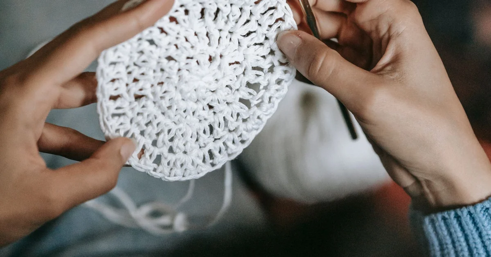
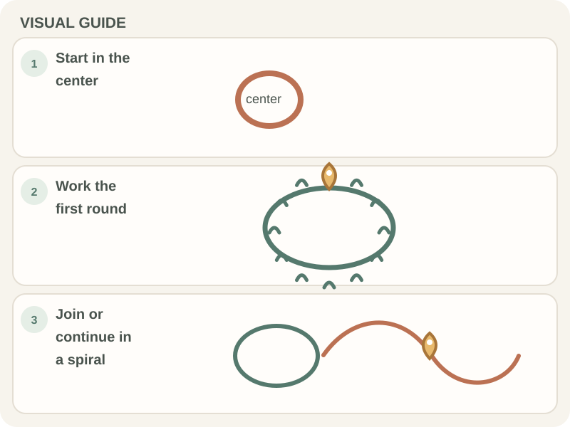

Stitches & Techniques · Beginner guide
How to Work in the Round in Crochet
Choose between joined rounds and continuous spirals, then mark the round start so your stitch placement stays organized.

Crochet in the round can build a tube or flat circle. The pattern tells you whether to join each round or continue without a join.
Before you begin
Use a stitch marker and read the joining instructions. Joined rounds have a visible seam; a spiral avoids that seam but makes the start harder to spot.
Step-by-step instructions
- Make the starting ring using the method specified, such as a chain loop or adjustable ring.
- Work the first round into the ring and mark the first stitch or round start.
- For joined rounds, close only where instructed, then make any starting chain stated for the next round.
- For continuous rounds, move the marker as you work; do not add a joining slip stitch unless directed.

What to check
The join changes the fabric
If the seam drifts or the shape becomes uneven, check whether the pattern calls for a spiral or joined rounds. Keep your chosen method consistent.
Frequently asked questions
Should every round be joined?
No. Some patterns use joined rounds and others use continuous spirals. Follow the stated construction.
Why use a stitch marker?
It identifies the round start, which is easy to lose in a spiral and useful when checking increases.